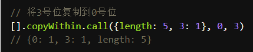
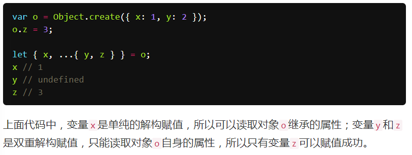
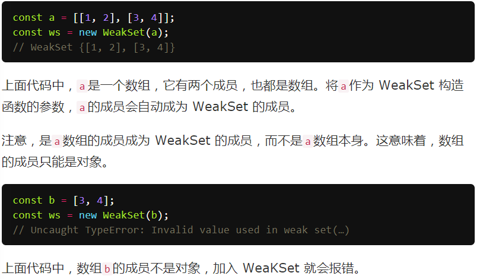
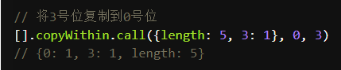
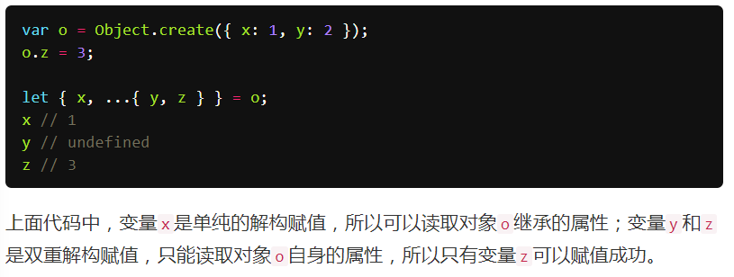
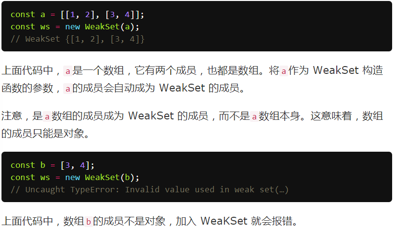
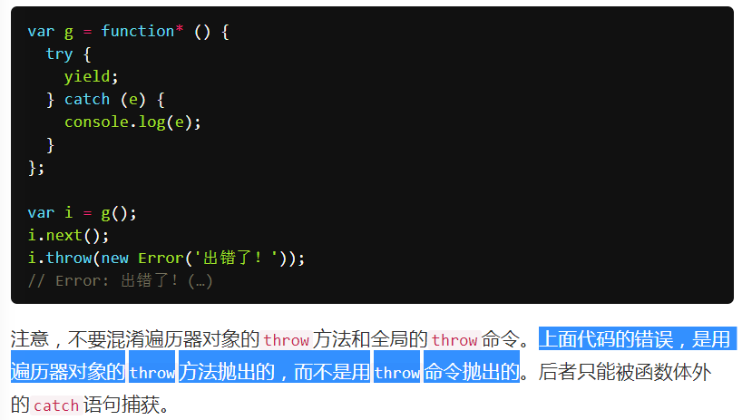
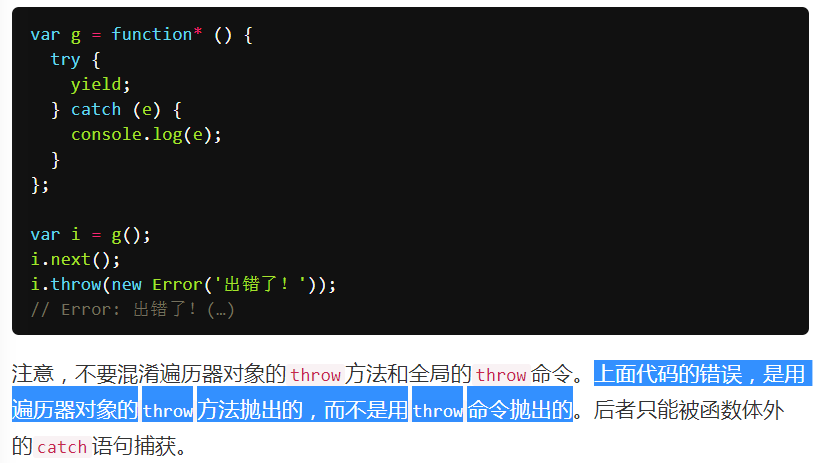

I belong to : Collection
数组的foreach可以和闭包起一样的作用
闭包中的变量包括参数，在内部函数执行完毕之前不会被释放
执行栈,任务队列
process.nextTick方法可以在当前"执行栈"的尾部----下一次Event Loop（主线程读取"任务队列"）之前----触发回调函数
setImmediate方法则是在当前"任务队列"的尾部添加事件
process.nextTick指定的回调函数是在本次"事件循环"触发，而setImmediate指定的是在下次"事件循环"触发
setTimeout(fn,0)表示当前代码执行完（执行栈清空）以后，立即执行（0毫秒间隔）指定的回调函数。
Promise，里面的函数是直接执行的.
Promise 的 then 应当会放到当前 "执行栈"的尾部

在Javascript引擎里面，队列还分为 Task队列（也有人叫做 MacroTask）和 MicroTask队列， MicroTask会优先于 Task执行。
比如常见的点击事件、 setImmediate、 setTimeout、 MessageChannel等会放入 Task队列，
但是 Promise以及 MutationObserver会放到 Microtask队列。
同时，Javascript引擎在执行 Microtask队列的时候，如果期间又加入了新的 Microtask，则该 Microtask会加入到之前的 Microtask队列的尾部，保证 Microtask先于 Task队列执行。
Task(MacroTask)队列中： setImmediate > MessageChannel > setTimeout 0
柯里化又称部分求值，柯里化函数会接收一些参数，然后不会立即求值，而是继续返回一个新函数，将传入的参数通过闭包的形式保存，等到被真正求值的时候，再一次性把所有传入的参数进行求值
//通用的柯里化函数
function curry(fn) {
let slice = Array.prototype.slice, // 将slice缓存起来
args = slice.call(arguments, 1); // 这里将arguments转成数组并保存
return function() {
// 将新旧的参数拼接起来
let newArgs = args.concat(slice.call(arguments));
return fn.apply(null, newArgs); // 返回执行的fn并传递最新的参数
}
}
// ES6版的柯里化函数
function curry(fn) {
const g = (...allArgs) => allArgs.length >= fn.length ?
fn(...allArgs) :
(...args) => g(...allArgs, ...args)
return g;
}
// 测试用例
const foo = curry((a, b, c, d) => {
console.log(a, b, c, d);
});
foo(1)(2)(3)(4); // 1 2 3 4
const f = foo(1)(2)(3);
f(5); // 1 2 3 5
简而言之就是函数的借用，天下函数(方法)大家用
//写法一
Function.prototype.uncurrying = function() {
let self = this;
return function() {
let obj = Array.prototype.shift.call(arguments);//删除并返回
return self.apply(obj, arguments);
}
};
//写法二
Function.prototype.uncurrying = function() {
let self = this;
return function() {
return Function.prototype.call.apply(self, arguments);
/*相当于Function.prototype.call.apply(Array.prototype.slice, arguments);
也就是相当于Array.prototype.slice.call(arguments)*/
}
};
//测试一
let slice = Array.prototype.slice.uncurrying();
(function() {
let result = slice(arguments);
console.log(result); // [1, 2, 3]
})(1,2,3);
//测试二
let slice = Array.prototype.push.uncurrying();
let obj = {
'length': 1,
'0': 1
};
push(obj, 110);
console.log(obj); // { '0': 1, '1': 110, length: 2 } [] === []//false
[] == []//false
//因为[]是一个数组，是一个对象。就好比创建了2个对象，然后比较两个对象是否相同
[] == false//true
/*他是经历了这个过程最终才为true的。
（[] == false） ----> （[] == +0） ----> （“”== +0） ----> （+0 == +0） ---> true*/
window instanceof Object//false
typeof(window) // object
typeof null === 'object';
null instanceof Object === false
null instanceof null//会抛出异常：``Uncaught TypeError: Right-hand side of 'instanceof' is not an object``let a=[1,2,3];
let b = a.map(n=>{n=n+1});
let c = a.map(n=>n=n+1);
b// [undefined, undefined, undefined]
c// [2, 3, 4]let b = a.map(n => {n = n + 1;return n;});(a,b,c) => 表达式（单一）相当于
(a,b,c)=>{ return 表达式}var a = 111111111111111110000;
b=111;
console.info(a+b);//111111111111111110000JS的基础类型Number，遵循 IEEE 754 规范，采用双精度存储（double precision），占用 64 bit。 1位用来表示符号位， 11位用来表示指数， 52位表示尾数
Math.pow(2, 53) == 9007199254740992 是可以表示的最大值.
Number.isSafeInteger(111111111111111110000)//false3
[3,2,1].reduce(Math.pow)//9表达式等价于 Math.pow(3, 2) => 9; Math.pow(9, 1) =>9
4
var arr = [0,1,2];
arr[10]=10;
arr.filter(function(x){return x==undefined});//[]首先检查了这个索引值是不是数组的一个属性, 那么我们测试一下.
0 in ary; => true
3 in ary; => false
10 in ary; => true从 3 - 9 都是没有初始化的'坑'!, 这些索引并不存在与数组中. 在 array 的函数调用的时候是会跳过这些'坑'的,所以它不知道是不是undefined
5
var obj = {
foo:'bar',
func:function(){
var self = this;
console.log(this.foo);
console.log(self.foo);
(function(){
console.log(this.foo);
console.log(self.foo);
}())
}
}
obj.func();输出
bar
bar
undefined
bar6
var f = function g(){return 23;}
typeof g();输出
//Chrome:
typeof g() //无输出响应
typeof g //undefined
typeof f() //number
typeof f //function
//Firfox typeof g() //无输出响应 typeof g //undefined typeof f() //number typeof f //function
//IE8 typeof g() //number typeof g //function typeof f() //number typeof f //function
* 7 重点
```javascript
add(2, 5); // 7
add(2)(5); // 7
function addto(){
var length = arguments.length;
var sum = 0;
for(var i = 0;i<length;i++){
sum += arguments[i]
}
return sum;
}
function add(){
var value = addto.apply(add,arguments);
var helper = function(next){
typeof next == "number" ? value+=next:value;
return helper
}
helper.valueOf = function(){
return value;
}
return helper;
}
8
void 0//undefined
void(0)//undefined9
this;//window
var obj = {
func : function(){return this;}
};
obj.func();//obj抛出的异常找最近的catch
try{
try{
throw new Error('oops');
}
finally{
console.log('finally');
}catch(ex){
console.error('outer',ex.message);
}
}输出 outer oops finally
抛出的异常只需处理一次
try{
try{
throw new Error('oops')
}
catch(ex){
console.error('inner',ex.message);
}finally{
console.log('finally')
}
}catch(ex){
console.error('outer',ex.message)
}
}输出 inner oops finally
12
fd();//true
function fd(){
//do sth
return true;
}fe();//TypeError
var fe = function(){
//do sth
}13
var myarr2 = new
Array("80","16","50","6","100","1");
document.write(myarr2.sort());//1,100,16,50,6,80原因 ：因为按unicode码顺序排列。如要实现排序，就必须手写排序函数


 





什么是普通对象？？？
 

为什么result先输出？？？？